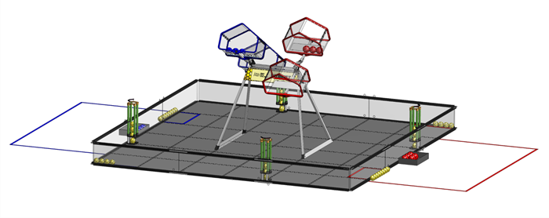
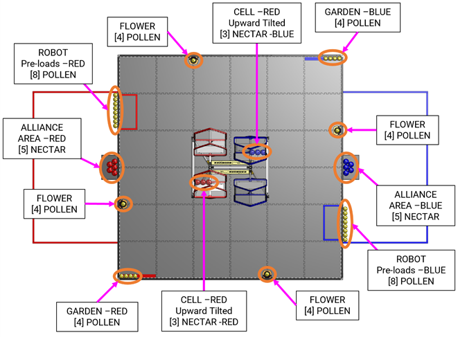
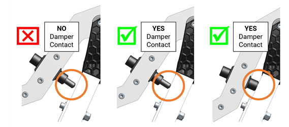
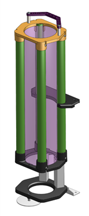
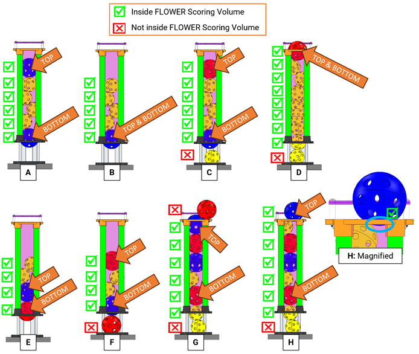
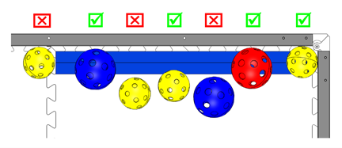
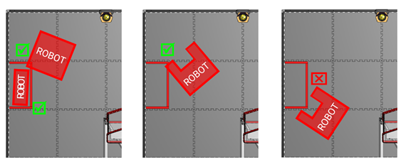
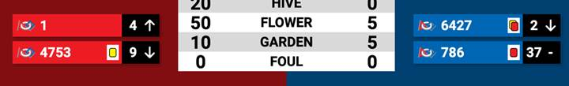
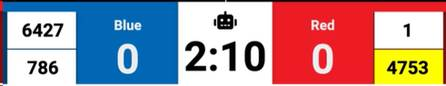
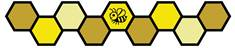

Rasm 10 - 1: BIOBUZZ uchun FIELD

BIOBUZZ, 2 ALLIANCES (ALLIANCE 2 FIRST Tech Challenge jamoalarining kooperatividir) o'yinida MATCHES, quyida tasvirlangan tafsilotlarga muvofiq o'rnatilgan va amalga oshirilgan.
MATCHES MATCH oʻrnatilishidan oldin, 30 - ikkinchi AUTO davri, AUTO va TELEOP oʻrtasidagi 8 - ikkinchi oʻtish davri va 2 - daqiqali TELEOP davri boʻlib, keyin MATCH oʻrnatilishidan soʻng amalga oshiriladi.
MATCH paytida ROBOTS POLLEN va NECTAR ni yig'ib, ularni GARDEN-ga, FLOWERS-ga joylashtiradi va LAUNCH-ga ularni CELLS-ga joylashtiradi. HIVE TIP
Har safar HIVE TIPPED bo'lganda, ALLIANCE-ga dastlab ALLIANCE AREA-ga joylashtirilgan beshta NECTAR-dan biriga kirishga ruxsat beriladi. MATCHda qolgan 60 soniya bilan ALLIANCES qolgan barcha NECTAR-ga kirishi mumkin.
ROBOTS MATCH-ni FLOWERS-ga egalik qilishni talab qilib, NECTAR-ni joylashtirib, LOADING ZONE-ga qaytadi.
DRIVE TEAM - bu FIRST texnologik tanlovi jamoasidan 4 kishidan iborat guruh bo'lib, u MATCH uchun jamoa ishlashi uchun javobgardir. DRIVE TEAMda ALLIANCES ROBOTSga yordam berish uchun foydalanishi mumkin bo'lgan 3ga xos rollar mavjud va faqat DRIVE TEAMning 1 a'zosi STUDENT bo'lmagan shaxs bo'lishi mumkin.
DRIVE TEAM va DRIVE TEAM bilan bog'liq qoidalarning ta'rifining maqsadi shundaki, yengillashtiruvchi holatlar mavjud bo'lmasa, DRIVE TEAM o'sha jamoaga tegishli bo'lgan tadbirga kelgan va o'z jamoalari va tadbirdagi ROBOT’S o'yinlari uchun javobgar bo'lgan odamlardan iborat (bu shuni anglatadiki, shaxs 1 dan ortiq jamoaga tegishli bo'lishi mumkin).
Maqsad jamoalarga boshqa jamoalarning a'zolarini STRATEGIC foydasi uchun qarz beruvchi jamoa, qarz oluvchi jamoa va / yoki ularning ALLIANCE uchun adoptatsiya qilishga ruxsat berish emas (masalan, ALLIANCE etakchisi DRIVERS ning 1 o'z sherikining DRIVER dan ko'ra ko'proq tajribasiga ega deb hisoblaydi va jamoalar sherik jamoasi ushbu DRIVER-ni adoptatsiya qiladi va ularni pley-off uchun DRIVE TEAM-ning a'zosi qiladi). ALLIANCE
Taʼrif 2 asosiy sabablarga koʻra qatʼiy emas. Birinchidan, jamoalar va tadbir bo'yicha ko'ngillilarga qo'shimcha byurokratik yuk qo'ymaslik (masalan, jamoalarning rasmiy ro'yxatlarini taqdim etishini talab qilish). Ikkinchidan, jamoalarga Gracious Professionalism-ni namoyish etish imkoniyatini beradigan favqulodda holatlar uchun joy ajratish (masalan, avtobus kechikadi, DRIVE COACH-da DRIVERS yo'q va ularning qo'shnilari avtobus kelguncha DRIVERS-ni vaqtinchalik jamoa a'zolari sifatida qarz berish orqali yordam berishga rozi bo'lishadi). DRIVE TEAM ARENA
10-1-jadval: DRIVE TEAM rollari
| Roli | Tavsif | Maks./ DRIVE TEAM | Kriteriyalar |
|---|---|---|---|
| DRIVE COACH | yo'lboshchi yoki maslahatchi | 1 | har qanday jamoa a'zosi va u katta yoshda bo'lishi mumkin, DRIVE COACH nishonchasini kiyishi kerak |
| DRIVER | ROBOT operatori va nazoratchisi | 3 | STUDENT, DRIVE TEAM nishonchasini kiyishi kerak |
| HUMAN PLAYER | SCORING ELEMENT boshqaruvchisi |
STUDENT - bu o'rta maktabni, o'rta maktabni yoki joriy mavsumning sentyabr oyi 1 st holatiga kelib o'z HOME REGION-sining o'xshash darajasini tugatmagan shaxs.
Har bir MATCH boshlanishidan oldin, 10.3.1 SCORING ELEMENTS bo'limida tasvirlangan FIELD STAFF bosqich SCORING ELEMENTS DRIVE TEAMS bosqichlari ROBOTS (10.3.4 ROBOTS bo'limida tasvirlangan) va OPERATOR CONSOLES (10.3.3 OPERATOR CONSOLES bo'limida tasvirlangan). So'ngra DRIVE TEAMS 10.3.2 DRIVE TEAMS bo'limida tasvirlanganidek o'z o'rinlarini egallaydi.
Rasm 10 - 2: SCORING ELEMENT bosqichma-bosqich joylashishi

Har bir HIVE shunday burilganki, bir CELL pastga, ikkinchisi esa koʻrsatilganidek yuqoriga qaratilgan. (Buni eslab qolishning oson usuli CELL boʻlib, unda nuqta FLOWER pastga burilgan boʻlishi kerak.) SCORING ELEMENTS FIELD-da quyidagicha joylashtirilgan (rasm 10 ‐ 2): CELL
A. 40 POLLEN FIELD-da quyidagicha sahnalashtirilgan:
i. 4 POLLEN har bir 4 FLOWERS (16)
ii. Qizil rangdagi 4 POLLEN GARDEN (4)
iii. Koʻk rangdagi 4 POLLEN GARDEN (4)
iv. 4 POLLEN har bir ROBOT (16) ga oldindan yuklangan (10.3.4 ROBOTS-bo'lim)
Oldindan yuklangan POLLEN ROBOT-da yoki uning ustida joylashgan MATCH-ni yoki ROBOT-ga aloqador bo'lgan TILES-da joylashgan -ni ishga tushiradi. MATCH uchun mavjud bo'lmagan ROBOTS o'zlarining oldindan yuklangan POLLEN-larini LOADING ZONE-ning taxminan markazida perimetr devoriga qarshi joylashtiradi.
GARDENdagi POLLEN ALLIANCE AREA-ga eng yaqin burchadan boshlab tomoshabinlarga yoki orqa perimetr devorlariga tegadigan chiziq bo'yicha joylashtiriladi. Joylashuvda ba'zi bir mayda farq paydo bo'lishi mumkin.
B. 8 qizil va 8 koʻk NECTAR FIELD-da quyidagicha joylashtirilgan:
i. 3 NECTAR har bir yuqoriga qaragan CELL ning tegishli rangi (6)
ii. 5 NECTAR har bir ALLIANCE AREA-da tegishli rangda (10)
CELL-dagi NECTAR CELL-ning orqa devoriga tegib, tegishli rangdagi ALLIANCE AREA-ga eng yaqin bo'lgan tomonga to'g'ri joylashtiriladi. Ko'ngillilar tomonidan ushbu NECTAR ni qo'yish joyida ba'zi o'zgarishlar bo'lishi mumkin, ammo ular odatda ko'rsatilganidek joylashtiriladi.
15.2 o'yin modifikatsiyasida tasvirlanganidek: SCORING ELEMENTS ning soni, turi va tarqatilishi FIRST chempionati va FIRST Premier tadbirlari uchun sozlanishi mumkin. FIRST chempionati uchun har qanday o'yin o'zgartirishlari 1.7.3 Team Updates bo'limida tasvirlanganidek, oxirgi muntazam rejalashtirilgan Team Update-da yoki undan oldin e'lon qilinadi. FIRST Premier tadbirlari uchun o'yin modifikatsiyalari tadbir tashkilotchilari tomonidan tadbirdan oldin joylashtiriladi.
DRIVE TEAMS oldingi MATCH-dan DRIVE TEAM ketgandan so'ng ALLIANCE AREA-ga joylashib, MATCH-ga tayyorgarlik ko'rish. DRIVE TEAM boshlang'ich shartlari quyida ko'rsatilgan bo'lib, DRIVE TEAM-ning har qanday shartga to'sqinlik qilishi yoki uni kechiktirishi G301-ni buzish xavfi bilan bog'liq.
A. Faqat kelgusi MATCHga tayinlangan DRIVE TEAM a'zolari hozir bo'ladi.
B. Faqat ROBOTS dastlabki, to'liq tekshiruvdan o'tgan DRIVE TEAM a'zolari hozir bo'ladi.
C. DRIVE TEAM a'zolari o'zlarining belgilangan ALLIANCE AREAda sahnalashtirilgan. Agar ALLIANCE a'zolari o'zlarining DRIVE TEAM a'zolarining qayerda sahnalashtirilishiga kelisha olmasalar, MATCH jadvalida Qizil 1 yoki Ko'k 1 sifatida ko'rsatilgan jamoa tomoshabinlarga eng yaqin sahnani tashkil etadi.
D. DRIVE TEAM a'zolari o'zlarining belgilangan DRIVE TEAM nishonchalarini bellaridan yuqori ko'rsatadilar.
E. Agar Playoff MATCH bo'lsa, ALLIANCE CAPTAIN o'zining belgilangan ALLIANCE CAPTAIN identifikatorini (masalan, shlyapa, qo'lqop) aniq ko'rsatadi.
DRIVE TEAMS o'z OPERATOR CONSOLES-ni o'z ALLIANCE AREA-da sahnalashtirilganidan so'ng o'rnatadi. OPERATOR CONSOLES barcha tegishli qoidalarga, xususan 12.9 OPERATOR CONSOLE-bo'limdagi qoidalarga mos bo'lishi kerak. DRIVE TEAM-ning OPERATOR CONSOLE-ni to'sib qo'yishi yoki kechiktirishi G301-ni buzish xavfi bilan bog'liq.
A. AUTO davrida OpModeni ishga tushirish niyatidagi DRIVE TEAMS 30 soniya soati yoqilgan holda DRIVER STATION ilovasi ichida OpModeni tanlashi kerak.
B. Aks holda, DRIVE TEAMS DRIVER STATION ilovasi ichida TELEOP OpMode ni tanlashi kerak.
C. Tanlangan OpMode DRIVER STATION dasturidagi INIT tugmasini bosish orqali ishga tushirilishi kerak.
DRIVE TEAMS o'z ROBOT-ni G304-ga muvofiq bosqichga qo'yadi. ROBOT o'rnatish talablariga xalaqit beradigan yoki kechiktiradigan DRIVE TEAM G301-ni buzish xavfi bor.
ROBOTS MATCH bilan bog'lanishni boshlash kerak 4 oldindan yuklangan POLLEN. POLLEN ROBOT ichida yoki uning ustida ushlab turilishi yoki TILES-ning boshlang'ich joyidagi ROBOT bilan bog'liq bo'lgan FIELD-ning o'zining ALLIANCE tomonida to'liq joylashtirilgan -ning ustiga qo'yilishi mumkin.
Agar ROBOT MATCH boshlanishidan oldin DISABLED boʻlsa, u FIELD STAFF bilan muvofiqlashtirib FIELD-dan olib tashlanishi mumkin. ROBOT DISABLED bo'lgan yoki hozir bo'lmagan jamoa, uning ROBOT bo'limi 3.3.1 inspeksiyasi bo'yicha tekshiruvdan o'tgan bo'lsa va ALLIANCE AREAda kamida bitta STUDENT DRIVE TEAM a'zosi mavjud bo'lsa, kvalifikatsiya MATCH nuqtalari yoki playoff MATCH nuqtalarini olish huquqiga ega.
Agar joylashtirish tartibi ALLIANCES yoki ikkalasi uchun ham muhim bo'lsa, ALLIANCE ushbu MATCH uchun o'rnatishdan oldin REFEREE boshlig'ini yoki ularning tayinlangan shaxsini xabardor qiladi va REFEREE boshlig'i ALLIANCES-ga ROBOTS-ni o'rniga joylashtirishni buyuradi. REFEREE koʻrsatmalariga koʻra, ROBOTS quyidagi tartibda joylashtiriladi:
1. birinchi qizil ROBOT
2. birinchi koʻk ROBOT
3. ikkinchi qizil ROBOT
4. ikkinchi koʻk ROBOT
MATCHES kvalifikatsiyasida Qizil 1 yoki Ko'k 1 ga tayinlangan ROBOT o'zlarining ALLIANCE ichida birinchi o'rinni egallaydi. Playoff MATCHES-da ALLIANCE-ning etakchiligi qaysi ROBOT-ning ALLIANCE-ning ichida birinchi o'rinni egallashiga qaror qiladi.
Har bir MATCH ning birinchi davri 30 soniya (0:30) boʻlib, Avtonom davri (AUTO) deb ataladi. AUTO , ROBOTS davrida DRIVER boshqaruv yoki inputsiz ishlaydi .
AUTO va TELEOP o'rtasidagi o'tish davri 8 soniyaga teng bo'ladi. 10.5
Har bir MATCH ning uchinchi davri 2 daqiqa (2:00) davom etadi va teleoperatsiya davri (TELEOP) deb ataladi. TELEOP, DRIVERS davrida ROBOTS nuqtalarni olish uchun masofadan boshqariladi. MATCH davrini batafsil koʻrish uchun 9 - 1 jadvallariga qarang.
ALLIANCES 10 ‐ 2 jadvalida koʻrsatilganidek, MATCH boʻylab turli xil harakatlarni amalga oshirish uchun mukofotlanadi.
ALLIANCES jamoalari MATCHES mavsumida MATCH va RANKING POINTS (RP) nuqtalari orqali o'zlarining ishlashi uchun mukofotlanadi, bu esa 13.6.3 bo'limining malakaviy reytingi bo'yicha jamoalarni reytinglash uchun ishlatiladigan o'lchovni oshiradi.
Barcha yutuqlar MATCH davrida yangilanadi. Baholash yutuqlari quyidagicha baholanadi:
A. HIVE TIPS ning bahosi MATCH bo'ylab amalga oshiriladi va MATCH yakunida barcha SCORING ELEMENTS va ROBOTS to'xtab qolguncha davom etadi.
B. TELEOP boshlanishidan oldin to'liq bo'lgan HIVE TIPS AUTO-ning bir qismi sifatida baholanadi.
C. CELL-da qolgan POLLEN va NECTAR-ning bahosi barcha SCORING ELEMENTS va ROBOTS-lar MATCH-ning yakunida to'xtab qolgandan keyin amalga oshiriladi.
D. FLOWER-da olingan SCORING ELEMENTS-ning bahosi MATCH-da bo'lib o'tadi, yakuniy bahosi TELEOP-ning oxirida SCORING ELEMENTS-ning va ROBOTS-ning hammasi MATCH-ning yakunida to'xtab qolgandan so'ng bo'ladi.
E. GARDEN balini baholash TELEOP-ning oxirida, barcha ROBOTS va SCORING ELEMENTS MATCH-ning yakunida to'xtab qolganda sodir bo'ladi.
F. LEAVE va AUTO PARK-ning bahosi AUTO-ning oxirida amalga oshiriladi.
G. TELEOP PARK-ning bahosi MATCH-ning oxirida amalga oshiriladi.
Natijalar insoniy ko'ngillilar tomonidan baholanadi va sanaladi. To'g'ridan-to'g'ri natijalardagi kechikishlar yoki xatolar ARENA FAULT deb hisoblanmaydi (13.2 MATCH takrorlashlariga qarang). Guruhlar mezonlarning bajarilishi aniq va aniq bo'lishiga ishonch hosil qilishlari kerak.
MATCH boshlangunga qadar, AUTO-dan TELEOP-ga o'tish davrida va MATCH 0:00-da tugagandan keyin qo'lga kiritilgan yutuqlar jazolanishi mumkin.
HIVE TIP
HIVE quyidagi hollarda TIPPED deb hisoblanadi:
A. u pastga qaragan CELL yuqoriga qaragan CELLga aylanib, bir barqaror holatdan boshqa barqaror holatga o'tadi va
B. shundan so'ng, ilgari ramka bilan aloqada bo'lmagan HIVE-dagi damper ramkaga ta'sir ko'rsatishni boshlaydi.
Rasm 10 - 3: HIVE damper va ramka

HIVES ikki barqaror bo'lishi uchun mo'ljallangan va ko'p hollarda HIVE bir barqaror holatdan boshqasiga o'tganligi aniq bo'lishi kerak. Maxsus HIVE TIP mezonlari taqdim etilgan bo'lsa-da, ko'ngillilar damper ramkaga tegadigan aniq lahzani kuzatishlari kutilmaydi.
Jamoalar LAUNCHING pastga qaragan CELL-da HIVE-ning burilish paytida harakatini buzishi va TIP-ga erishilmasligiga olib kelishi mumkinligini bilishlari kerak. Bu odatdagi o'yin davomida sodir bo'lishi ehtimoldan yiroq bo'lsa-da, ushbu vaziyatda jamoalar LAUNCHING-ni to'xtatib qo'yishlari kerak bo'lishi mumkin, shunda ko'ngillilar uchun TIP-ga erishilganligi aniq va aniq bo'ladi.
LAUNCHING-ni yuqoriga qaragan CELL-ga o'tkazish HIVE TIP-ni olishning yagona yo'li hisoblanadi. ROBOTS G417-ni kuzatib borishi kerak va boshqa yo'llar bilan HIVE TIP-ni buzishi yoki keltirib chiqarishi mumkin emas.
CELLda qolgan POLLEN va NECTAR
MATCH oxirida yuqoriga qaraydigan CELLda qolgan har qanday POLLEN va / yoki NECTAR ushbu ALLIANCE uchun ball to'laydi.
NECTAR va POLLEN o'lchash hajmi kamida qisman FLOWER o'lchash hajmi doirasida bo'lganda: yuqori halqa va o'rta halqa o'rtasida to'qima rangda ko'rsatilgan va CAD Referensiyasi 10 ‐ 4 ga kiritilgan.
CAD Maʼlumotnoma 10 ‐ 4: FLOWER ball toʻplash hajmi, Koʻproq tafsilotlarni koʻrish uchun bosing

FLOWER hisobini MATCHda har G410da bir daqiqa qolmaguncha boshlash mumkin emas. Bir daqiqa qolishidan oldin qo'lga kiritilgan yutuqlar hamon qo'lga qo'yiladi, ammo jarimalar qo'llaniladi.
SCORING ELEMENTS-ni FLOWER-ning yuqori qismiga joylashtirish natijaga erishishning yagona yo'li. ROBOTS FLOWER bilan aloqada boʻlganda G418-ni kuzatib borishi kerak.
Pastki NECTAR bonus
FLOWER-da ball to'lash mezonlariga javob beradigan o'z rangining eng past NECTAR-ga ega bo'lgan ALLIANCE nuqtalarga ega bo'ladi.
FLOWER Egasi
FLOWER-da ball to'lash mezonlariga javob beradigan o'z rangining eng yuqori NECTAR-ga ega bo'lgan ALLIANCE o'sha FLOWER-ga egalik qiladi va ALLIANCE-ning POLLEN va / yoki NECTAR-ni FLOWER-ga qo'yganidan qat'i nazar, ushbu FLOWER-ning ball to'lash mezonlariga javob beradigan har bir POLLEN va NECTAR-ga baho oladi.
Rasm 10 - 5: FLOWER Mulk

GARDEN ball olish uchun POLLEN yoki NECTAR kamida qisman GARDEN zonasida bo'lishi kerak.
Rasm 10 - 6: GARDEN Bal qoʻyish

LEAVE
LEAVE nuqtalariga ega bo'lish uchun ROBOT endi perimetr devoriga tegmasligi uchun harakat qilishi kerak.
PARK
PARK nuqtalariga ega bo'lish uchun ROBOT kamida qisman LOADING ZONE-da bo'lishi uchun harakat qilishi kerak. (10-7-rasm)
Rasm 10 - 7: LOADING ZONE PARK Misollar

10-2-jadval: BIOBUZZ nuqta qiymatlari
| MATCH ball | RANKING POINTS | |||
|---|---|---|---|---|
| AUTO | TELEOP | |||
| LEAVE | 3 | - | ||
| PARK | 5 | 5 | - | |
| HIVE | HIVE TIP | 20 | 20 | - |
| CELLda qolgan POLLEN va/yoki NECTAR | - | 2 | - | |
| FLOWER | Pastki NECTAR bonus | - | 5 | - |
| POLLEN va/yoki NECTAR o'ziga tegishli FLOWER-da | - | 2 | - | |
| GARDEN | POLLEN va/yoki NECTAR GARDEN-da | - | 1 | - |
| SWARM RP – Qo'shma LEAVE + PARK nuqtalari chegara darajasida yoki undan yuqori | 1 | |||
| POLLINATOR 1 RP – Chegara darajasida yoki undan yuqori bo ' lgan TIPS soni | 1 | |||
| POLLINATOR 2 RP – Chegara darajasida yoki undan yuqori bo ' lgan TIPS soni | 1 | |||
| WIN | Raqobatchingizdan ko ' proq MATCH ball bilan MATCH-ni to ' ldirish | 3 | ||
| TIE | Raqibingiz bilan bir xil MATCH nuqtalari bilan MATCH-ni toʻldirish | 1 | ||
10-3-jadval: BIOBUZZ RP chegaralari
| RP turi | FIRST Championship | Hududiy chempionatlar | Boshqa barcha hodisalar* |
|---|---|---|---|
| SWARM RP | TBA | TBA | 16 ball |
| POLLINATOR 1 RP | TBA | TBA | 4 TIPS |
| POLLINATOR 2 RP | TBA | TBA | 7 TIPS |
Hududiy chempionatlar va FIRST chempionatlari uchun RP chegaralari Team Updates-da e'lon qilinadi.
*Premier tadbirlari jamoalarga taqdim etmoqchi bo'lgan tajribani eng yaxshi tarzda aks ettirish uchun o'zlarining chegaralarini o'rnatishlari mumkin.
FIRST Tech Challenge qoidalarni baholash va buzilishlarni belgilashda muddatlar va harakatlar qanday baholanishi kontekstida 3 so'zlarini ishlatadi. Ushbu so'zlar mezonlarni tavsiflash uchun umumiy yo'l-yo'riq beradi. REFEREES vaqt oralig'ida hisob-kitob qilish niyatida emas.
FIRST Tech Challenge "STRATEGIC" so'zini tanlov ruhiga mos kelmaydigan muayyan turdagi buzilishlarni tavsiflash uchun ishlatadi, chunki bu 1.5 bo'limida ko'rsatilganidek Raqobatning yaxlitligi to'g'risidagi shartnoma (CIC):
Ba'zi qoidalar STRATEGIC deb qabul qilingan yoki STRATEGIC deb qabul qilingan harakatlar uchun ko'proq buzilishni ta'minlaydigan (masalan, natijalarga erishish harakatlariga to'sqinlik qilish yoki imkon berish) aniq harakatlarni taqiqlaydi. Bu, oldindan koʻrinya oladigan oqibatlarga olib keladigan qasddan yoki oʻylamasdan qilingan harakatlarni ham oʻz ichiga oladi. Tasodifiy / kutilmagan hodisalar STRATEGIC bo'lishi mumkin emas.
Umuman olganda, jamoa REFEREES tomonidan qo'shimcha tekshiruvga duch kelishi mumkin, u STRATEGIC buzilishi bor-yo'qligini aniqlaydi:
A. bitta MATCH davrida bir xil qoidabuzarlik uchun bir necha marta ogohlantirish berilgan bo'lsa, uni tasodifiy yoki oldindan ko'rilmagan deb hisoblash mumkin bo'lsa; yoki
B. bir xil qoidabuzarlik uchun bir guruhga ko'p martalik VERBAL WARNINGS va ko'p martalik MATCHES berilgan bo'lsa, bu yakka tartibda tasodifiy yoki oldindan ko'rilmagan deb hisoblanishi mumkin.
O'zboshimchalik bilan jamoaning foydasiga ishlatiladigan tasodifiy holatlar STRATEGIC sifatida ko'rib chiqiladi.
Agar boshqacha ko'rsatilmagan bo'lsa, har bir qoida buzilishi uchun barcha jazolar tayinlanadi va bitta harakat bir nechta qoidalarni buzishi mumkin. Jarimalarning tavsifi 10 ‐ 4 jadvalda keltirilgan. O'yin qoidalari bo'limi bo'ylab barcha qoidalar REFEREE tomonidan qabul qilinganidek chaqiriladi.
10-4-jadval: Qoidalarni buzish
| Jarima | Tavsif |
|---|---|
| VERBAL WARNING | tadbir xodimlari yoki REFEREE rahbari tomonidan berilgan ogohlantirish |
| MINOR FOUL | raqibning MATCH ball toʻplamiga nisbatan 5 ball toʻlash |
| MAJOR FOUL | raqibning MATCH ball toʻplamiga nisbatan 20 ball toʻlash |
| YELLOW CARD | REFEREE boshlig'i tomonidan ROBOT yoki jamoa a'zolarining iflos xulq-atvori yoki qoida buzilishlari uchun berilgan ogohlantirish. Xuddi shu turnir bosqichida keyingi YELLOW CARD natijalari RED CARD |
| RED CARD | ROBOT yoki jamoa a'zolarining noto'g'ri xulq-atvori yoki qoidani buzganligi uchun REFEREE boshlig'i tomonidan berilgan jazo, natijada jamoa MATCH uchun DISQUALIFIED bo'ladi. |
| DISABLED | REFEREE guruhga ROBOT-ni to'xtatishni buyuradi, bu esa barcha chiqishlarni o'chirib qo'yadi va ROBOT-ni qolgan MATCH-ga ishlay olmaydi. |
| DISQUALIFIED | 0 MATCH nuqtalari va 0 RANKING POINTS nuqtalarini MATCH kvalifikatsiyasida oladigan yoki ALLIANCE nuqtalarini 0 MATCH nuqtalarini MATCH pley-offida oladigan jamoaning holati. |
Ushbu hujjat bo'ylab aniq ko'rsatilgan qoida buzilishlaridan tashqari, YELLOW CARDS va RED CARDS FIRST Tech Challenge-da 1.5 bo'limida tasvirlangan xulq-atvor va axloqiy qoidani buzadigan jamoa va ROBOT xatti-harakatlarini hal qilish uchun ishlatiladi. Raqobat halolligi shartnomasi (CIC).
Bosh REFEREE vazifalarni tayinlashi mumkin:
RED CARD natijasida MATCH DISQUALIFICATION hosil bo'ladi. YELLOW yoki RED CARD ni olgan jamoa YELLOW CARD-ni keyingi MATCHES-ga olib boradi, quyida qayd etilganlardan tashqari.
Agar YELLOW yoki RED CARD tayinlanishiga olib keladigan harakat 13.2 bo'limidagi MATCH takrorlashlari bo'yicha ARENA FAULT natijasi deb aniqlansa, CARD bekor qilinadi.
YELLOW CARDS qoʻshimcha boʻladi, yaʼni ikkinchi YELLOW CARD avtomatik ravishda RED CARD ga aylanadi. Jamoaga har qanday keyingi hodisa uchun RED CARD beriladi, unda ular qo'shimcha YELLOW CARD olishadi, shu jumladan bitta MATCH paytida ikkinchi YELLOW CARD olishadi.
Tomoshabinlar uchun koʻrsatiladigan MATCH natijalari ekranida YELLOW CARD, ikkinchi YELLOW CARD yoki RED CARD koʻrsatilgan (rasm 10 ‐ 8). YELLOW CARD sariq to'g'ri to'rtburchak sifatida ko'rsatiladi, ikkinchi YELLOW CARD sariq to'g'ri to'rtburchak ustida qizil to'g'ri to'rtburchak sifatida ko'rsatiladi va RED CARD qizil to'g'ri to'rtburchak sifatida ko'rsatiladi.
Rasm 10 - 8: YELLOW va RED CARD koʻrsatkichlarini koʻrsatadigan MATCH natijalari grafigining misoli

MATCHES o'yinlari tartibsiz o'ynalsa, keyingi MATCH xronologik jihatdan keyingi har qanday MATCH o'yinidir, dastlab rejalashtirilgan vaqtdan yoki MATCHning raqamlanishidan qat'i nazar.
Jamoa YELLOW yoki RED CARD-ni olganidan so'ng, uning jamoa raqami barcha keyingi MATCHES-lar, shu jumladan har qanday takrorlashlar davomida tomoshabinlar ekranida sariq fon bilan namoyish etiladi, bu esa jamoa, REFEREES va tomoshabinlarga YELLOW CARD-ni olib yurishlarini eslatib turadi.
Rasm 10 - 9: YELLOW CARD koʻrsatkichlarini koʻrsatadigan MATCH tomoshabinlari ekranidagi grafik namuna

Barcha YELLOW CARDS va G301 VERBAL WARNINGS mashg'ulot, kvalifikatsiya va bo'linma pley-off MATCHES yakunida chiqarib tashlanadi. Bosh REFEREE tomonidan berilgan boshqa VERBAL WARNINGSlar MATCHES mashg'ulotidan so'ng chiqariladi va MATCHES kvalifikatsiyasidan tortib keyingi turnir bosqichlarigacha davom etadi, agar boshqacha ko'rsatilmagan bo'lsa.
YELLOW va RED CARDS quyidagilarga asoslanib qo'llaniladi:
10-5-jadval: YELLOW va RED CARD arizasi
| YELLOW yoki RED CARDS ishlatilgan vaqt: | CARD qo'llaniladigan MATCH: |
|---|---|
| Malaka olishdan oldin MATCHES | REFEREES MATCHES kvalifikatsiyasi boshlanishidan oldin FIELD-da bo'lishi yoki bo'lmasligi mumkin. Tadbir xodimlarining hisoboti bilan, REFEREE boshlig'i MATCHES kvalifikatsiyasidan oldin qo'lga kiritilgan VERBAL WARNING yoki YELLOW CARD-ni MATCH kvalifikatsiyasidan oldin, ayniqsa nojo'ya xulq-atvor uchun saqlab qolishni tanlashi mumkin. |
| MATCHES-kvalifikatsiya davomida | MATCH jamoasi hozirgi (yoki yaqinda yakunlangan) SURROGATE bo'lmagan jamoasi. SURROGATE MATCHES uchun karta jamoaning oldingi kvalifikatsiyasiga qo'llaniladi MATCH. |
| MATCHES-kvalifikatsiya tugashi va MATCHES-playoff boshlanishi o'rtasida | ALLIANCE’S birinchi playoff MATCH |
| Pley-off oʻyinlari davomida MATCHES | ALLIANCE’S joriy (yoki yaqinda tuzilgan) MATCH |
MATCH natijalari e'lon qilingandan so'ng yoki REFEREE boshlig'i yoki ularning tayinlangan shaxslari jamoalarning ROBOTS-ni olishlari mumkinligini ko'rsatgandan so'ng, MATCH hozirgi MATCH emas.
Iltimos, YELLOW va RED CARDS qoidalarini qo'llashning 10.6.4 bo'limida ko'rsatilgan misollariga qarang.
Playoff paytida MATCHES, YELLOW va RED CARDS huquqbuzar jamoaga faqat huquqbuzar jamoaga emas, balki huquqbuzar jamoaning butun ALLIANCE ga tayinlanadi. Agar ALLIANCE 2 YELLOW CARDS-ni qabul qilsa, butun ALLIANCE-ga RED CARD beriladi, natijada tegishli MATCH uchun DISQUALIFICATION hosil bo'ladi.
Ushbu qo'llanmada qoidani buzishning bir nechta uslublari mavjud. Quyida buzilishlarning ba'zi misollari va buzilish qanday baholanishi to'g'risida tushuntirishlar keltirilgan. Ko'rsatilgan misollar barcha mumkin bo'lgan qoidabuzarliklarni emas, balki kombinatsiyalarning reprezentativ to'plamini ifodalaydi.
10-6-jadval: Huquqbuzarlik misollari
| Misol buzilish | Tushuntirishning kengaytirilishi |
|---|---|
| MINOR FOUL | Buzilish holatida MINOR FOUL buzuvchi ALLIANCE bilan taqqoslanadi. |
| MINOR FOUL har SCORING ELEMENT-ga. | Buzilish holatida qoida buzilishida ishlatilgan SCORING ELEMENTS soniga teng bo'lgan buzilish ALLIANCEga nisbatan MINOR FOUL baholanadi. |
| MAJOR FOUL har bir misolda. Agar REPEATED bo'lsa, har bir holat uchun MAJOR FOUL va har bir MATCH uchun YELLOW CARD. | MATCH bo'yicha dastlabki buzilishda MAJOR FOUL bo'yicha buzilish sodir bo'lgan har bir holat bo'yicha buzilish ALLIANCE bo'yicha baholanadi. Agar ikkinchi bayonotdagi REPEATED sharti bajarilgan bo'lsa ya'ni ROBOT MATCH da qo'shimcha ravishda qonunbuzarlikni takrorlasa, keyinchalik ALLIANCE buzuvchiga nisbatan qo'shimcha MAJOR FOUL baholanadi va MATCH dan so'ng buzuvchi jamoaga keyingi qonunbuzarlik uchun YELLOW CARD beriladi. O'sha ROBOT tomonidan o'sha MATCHda ushbu qoidani qo'shimcha ravishda buzmagan bo'lsa, ROBOT o'sha MATCHdagi o'z jamoasi uchun ikkita MAJOR FOULS va YELLOW CARD baholanadi. MATCH davrida ushbu qoidani qo'shimcha ravishda buzish MATCH davrida baholangan MAJOR FOULS raqamlarining sonini ko'paytiradi, ammo MATCH uchun berilgan YELLOW CARDS raqamlarining sonini oshirmaydi. |
| MAJOR FOUL va qo'shimcha MAJOR FOUL har 3 soniyada vaziyat tuzatilmaganligi uchun | Buzilish paytida MAJOR FOUL buzuvchi ALLIANCE bilan taqqoslanadi va REFEREE sanalishni boshlaydi. Ularning soni hisobni to'xtatish mezonlari bajarilmaguncha davom etadi va ushbu vaqt ichida har 3 soniya uchun qo'shimcha MAJOR FOUL buzuvchi ALLIANCE bilan taqqoslanadi. Ushbu turdagi qoidani 15 soniya davomida buzgan ROBOT summasi jami 6 MAJOR FOULS ga baholanadi (bir vaqtning o'zida boshqa qoidalar buzilmagan deb taxmin qilinsa). |
| VERBAL WARNING. MAJOR FOUL va YELLOW CARD har MATCH uchun, agar STRATEGIC bo'lsa. | Qoidani umumiy ravishda buzgan taqdirda, buzilgan jamoaga VERBAL WARNING beriladi. Biroq, agar REFEREES tomonidan buzilish STRATEGIC deb qabul qilinsa, MAJOR FOUL buzilish ALLIANCE ga qarshi baholanadi va MATCH dan so'ng, buzilish jamoasiga YELLOW CARD beriladi. |
| MAJOR FOUL har MATCH-ga. MAJOR FOUL va YELLOW CARD har MATCH uchun, agar STRATEGIC bo'lsa. | Agar MATCH davrida bir yoki bir nechta qoidabuzarliklar sodir bo'lsa, MAJOR FOUL MATCH bo'yicha qoidabuzar ALLIANCE bilan taqqoslanadi. Biroq, agar REFEREES tomonidan buzilish STRATEGIC deb qabul qilinsa, MAJOR FOUL har bir jamoaga MATCH bo'yicha ALLIANCE buzuvchiga nisbatan baholanadi. MATCH dan keyin jamoaga har MATCH uchun YELLOW CARD beriladi. Faqat 1 MAJOR FOUL va 1 YELLOW CARD gacha bo'lgan ni bitta MATCHda jamoa qo'lga kiritishi mumkin. |
| VERBAL WARNING. YELLOW CARD agar hodisa paytida keyingi qoidabuzarliklar yuz bersa. | Qonun buzilishining birinchi holatida, qonun buzuvchi jamoaga VERBAL WARNING beriladi. Agar bir xil qoida buzilishining qo'shimcha misoli keyinchalik sodir bo'lsa, ya'ni: bir xil tadbir bosqichida yoki keyingi tadbir bosqichida MATCH, keyinchalik sodir bo'lgan har qanday buzilishdan so'ng: MATCH-dan so'ng, buzilgan jamoaga har bir holat bo'yicha YELLOW CARD beriladi. |
| VERBAL WARNING. MAJOR FOUL va YELLOW CARD har bir misolda, agar STRATEGIC bo'lsa. MAJOR FOUL va RED CARD, agar STRATEGIC va CONTINUOUS raqibi ROBOT haydashga layoqatsiz bo'lsa. | Ushbu qoidani buzgan taqdirda, buzilgan jamoaga VERBAL WARNING beriladi. Biroq, agar REFEREES tomonidan buzilish STRATEGIC deb qabul qilinsa, MAJOR FOUL buzilish ALLIANCE ga qarshi baholanadi va MATCH dan so'ng jamoaga YELLOW CARD beriladi. Biroq, agar REFEREES tomonidan buzilish STRATEGIC deb qabul qilinsa va raqib ROBOT haydashga qodir bo'lmasa yoki buzilish 10 soniya yoki undan ko'proq davom etsa, buzilish paytida MAJOR FOUL buzilish ALLIANCE bilan taqqoslanadi. MATCH dan keyin jamoaga RED CARD beriladi. Faqatgina 1 MAJOR FOUL va 1 CARD bitta buzilish misoli uchun olinishi mumkin; ammo, agar MATCH davrida buzilishning ko'plab holatlari ro'y bersa, bitta MATCH-da bir nechta MAJOR FOULS va CARDS olinishi mumkin. |
REFEREE boshlig'i tadbir davomida ARENAda T401 bo'yicha yakuniy vakolatga ega, ammo qo'shimcha manbalardan, masalan, FIRST xodimlari, FTA tadbir direktori yoki boshqa tadbir xodimlari tomonidan ma'lumot olishlari mumkin. Bosh REFEREE qarorlari yakuniy hisoblanadi. Hech bir tadbir xodimi, shu jumladan REFEREE boshlig'i, har qanday manbadan, har qanday sharoitda har qanday MATCH-ning video, fotosurat, san'atkorlik tasvirlari va hokazolarini ko'rib chiqmaydi.
FTA, LRI yoki Bosh REFEREE o'z jamoasining ROBOT xavfsiz emasligini yoki ARENA-ga zarar etkazishi mumkinligini aniqlasa, MATCH mashg'ulotida ishtirok etishni taqiqlashi mumkin.
FIELD-dan chiqib ketadigan POLLEN-ni FIELD STAFF-ning eng yaqin qulay joyda FIELD-ga imkon qadar tezroq xavfsiz joylashtiradi.
FIELD-dan chiqadigan NECTAR 11.4.6 inson bo'limiga qayta kiritilishi uchun ALLIANCE’S DRIVE TEAM-ga qaytariladi. MATCHES uchun ARENA FAULT chaqirilmaydi, unda FIELD STAFF POLLEN ni FIELD ga qayta kiritishda yoki NECTAR ni DRIVE TEAM ga qaytarishda oqilona kechikishlar mavjud.
ARENA FAULT (13.2 MATCH takrorlashlari bo'limida tasvirlangan ARENA operatsiyasidagi xato) tasodifan quyidagi so'zlar bilan boshlanadigan MATCHES uchun chaqirilmaydi:
Zararlangan SCORING ELEMENTS keyingi MATCH qayta o'rnatilgunga qadar almashtirilmaydi. DRIVE TEAMS MATCHni ishga tushirishdan oldin FIELD STAFFni yo'qolgan, noto'g'ri joylashtirilgan yoki shikastlangan SCORING ELEMENTS haqida ogohlantirishi kerak.
MATCH davrida FIELD STAFF MATCH davrida ba'zi FIELD muammolarini yumshatish uchun Foydali yumshatish boʻyicha qoʻllanma davridagi qadamlarga amal qilishi mumkin.
MATCH tugaganidan so'ng va REFEREE boshlig'i yoki ularning vakili FIELD va FIELD STAFF tayyor ekanligini aniqlaganidan so'ng, ular FIELDni qayta o'rnatishni boshlaydigan signal berishadi va DRIVE TEAMS-ni ROBOTS-ni olish uchun -ga murojaat qilishadi.
FIELD-ni qayta o'rnatish paytida FIELD-dan ROBOTS-ni va OPERATOR CONSOLES-ni yangi tugagan MATCH-dan tozalash, keyingi MATCH-ga ROBOTS-ni va OPERATOR CONSOLES-ni FIELD-ga DRIVE TEAMS tomonidan yuklash va FIELD STAFF-ni ARENA elementlarini qayta o'rnatish.
